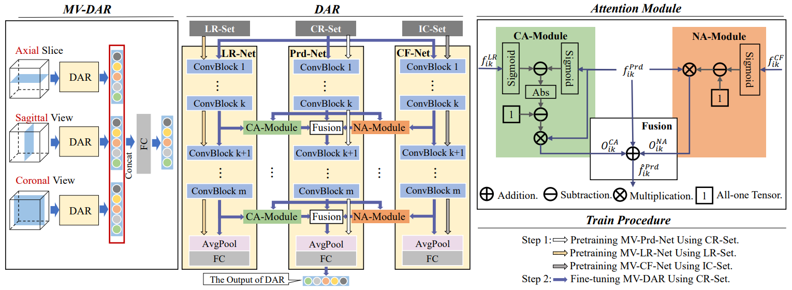
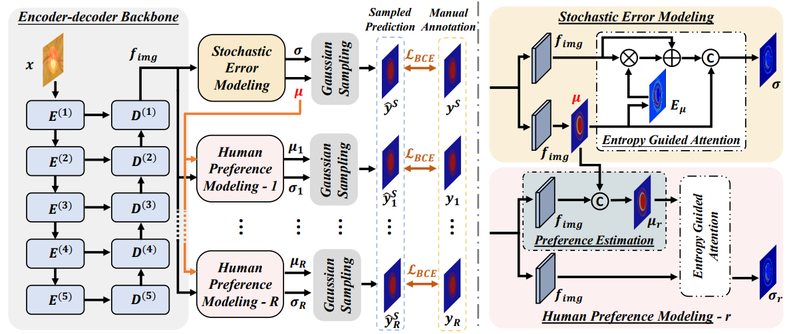
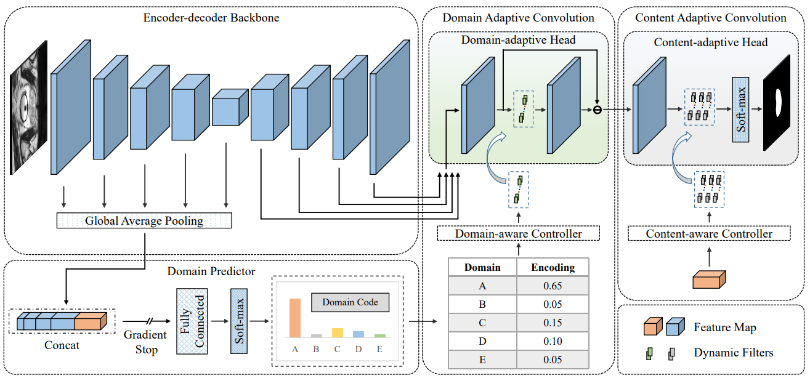

Shishuai HuPh.D. CandidateAffiliation: School of Computer Science and Engineering, Northwestern Polytechnical UniversityCurrent Address: No.1, Dongxiang Road, Chang’an District, Xi’an, Shaanxi, China Email: sshu@mail.nwpu.edu.cn Google Scholar • Semantic Scholar • GitHub • View CV |
Biography
- Introduction
- Education Background
- 2020.09-Present • Ph.D. Candidate • Supervisor: Prof. Yong Xia.
- 2016.09-2020.06 • B.E. Degree • Supervisor: Prof. Yong Xia.
-
I am a third-year Ph.D. student at School of Computer Science and Engineering, Northwestern Polytechnical University (NPU), China.
My research focuses on deep learning techniques for medical image segmentation, with particular interests in domain adaptation, noisy label learning, and federated learning.
School of Computer Science and Engineering, Northwestern Polytechnical University, China
Honors College, Northwestern Polytechnical University, China
News
- [2022.08.29] Our Label Propagation Framework got the 2-nd place of CarOtid vessel wall SegMentation and atherosclerOsis diagnosiS challenge.[Code, Pretrained Model]
- [2022.08.21] Our Boundary-Aware Network got the Top-5 of Multi-Modality Abdominal Multi-Organ Segmentation Challenge 2022.[Code, Pretrained Model]
- [2022.08.17] Our Boundary-Aware Network won the 2-nd place of Kidney PArsing Challenge 2022.[Code, Pretrained Model]
- [2022.06.03] One paper was accepted by MICCAI 2022, about Unsupervised Domain Adaptation.
- [2022.02.02] One journal paper was accepted by IEEE TMI, about Noisy Label Learning.
- [2021.01.10] Our Semi-supervised solution won the 1-st place of COVID-19 Lung CT Lesion Segmentation Challenge.[Mini-symposium, Slide]
- [2020.07.31] One paper was accepted by MICCAI-MLMI 2020.
- [2020.07.10] I received the B.E. degree from Northwestern Polytechnical University, supervised by Prof. Yong Xia.
Representative Publications
-
* indicates corresponding authorship and † indicates equal contribution.
Recent Joint Works
|  | Zehui Liao, Yutong Xie, Shishuai Hu, and Yong Xia* Learning from Ambiguous Labels for Lung Nodule Malignancy Prediction IEEE Transactions on Medical Imaging, vol. 41, pp. 1874-1884, 2022. [Paper, Code] |
|  | Zehui Liao†, Shishuai Hu†, Yutong Xie, and Yong Xia* Modeling Annotator Preference and Stochastic Annotation Error for Medical Image Segmentation Preprint, 2021. [Paper, Code] |
Domain Adaptation in Medical Image Segmentation
 |
Shishuai Hu†, Zehui Liao†, and Yong Xia Domain Specific Convolution and High Frequency Reconstruction based Unsupervised Domain Adaptation for Medical Image Segmentation MICCAI 2022, In Press, 2022. [Paper, Code] |
|  | Shishuai Hu†, Zehui Liao†, Jianpeng Zhang, and Yong Xia Domain and Content Adaptive Convolution for Domain Generalization in Medical Image Segmentation Preprint, 2021. [Paper, Code, Project] |
Awards and Honors
- [2022.08] • Second Place in CarOtid vessel wall SegMentation and atherosclerOsis diagnosiS (COSMOS) Challenge
- [2022.08] • Top-5 in Multi-Modality Abdominal Multi-Organ Segmentation (AMOS) Challenge
- [2022.08] • Second Place in Kidney Parsing Challenge
- [2022.08] • Second Prize in MICS Student Presentation Challenge
- [2021.01] • First Place in COVID-19 Lung CT Lesion Segmentation Challenge
- [2020.12] • Second Prize in the Challenge of Segmentation of Pulmonary Tissues in the 4th ISICDM
- [2020.12] • Third Prize in the Challenge of Acceleration of MR Imaging in the 4th ISICDM
- [2020.09, 2021.09] • University Graduate Fellowship, Northwestern Polytechnical University
- [2019.08] • MICCAI Undergraduate Student Travel Award
Academic Activities
- 24 August 2022: SMRA 2022, Los Angeles, USA (Online Oral Presentation)
- 22-24 August 2022: VALSE 2022, Tianjin, China (Poster)
- 11-13 August 2022: MICS 2022, Nanjing, China (Student Challenge Presentation)
- 10 January 2021: COVID-19 Lung CT Lesion Segmentation Challenge Mini-symposium, Online (Online Oral Presentation)
- 04-08 October 2020: MICCAI-MLMI 2020, Virtual Meeting (Online Presentation)
Acknowledgement: This page is based on this template
by Yicheng Wu